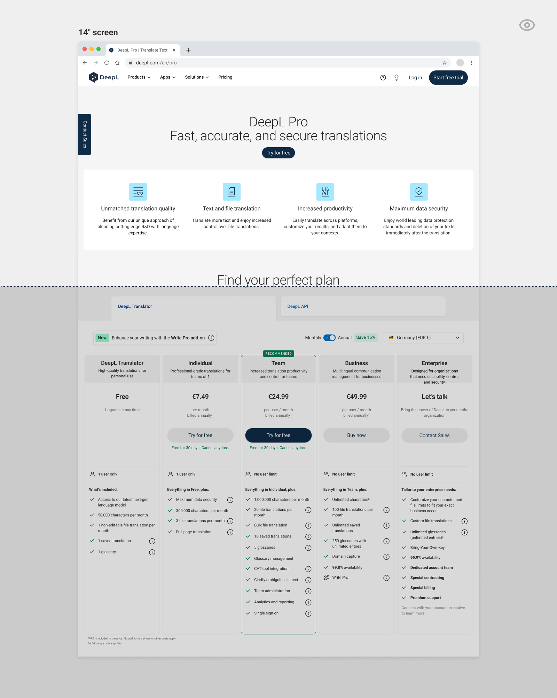
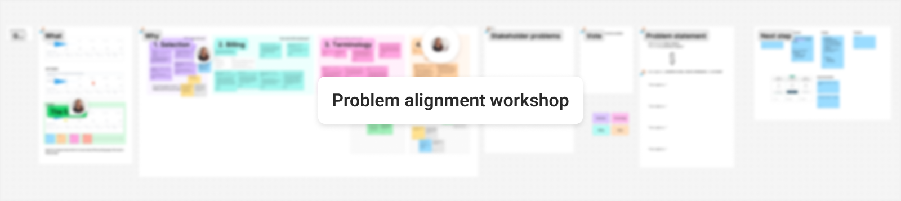
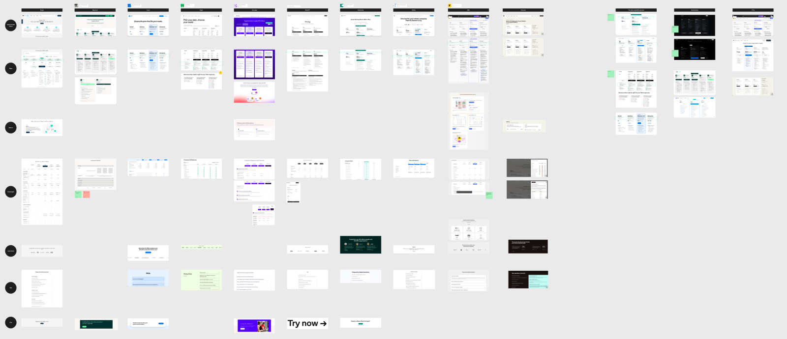
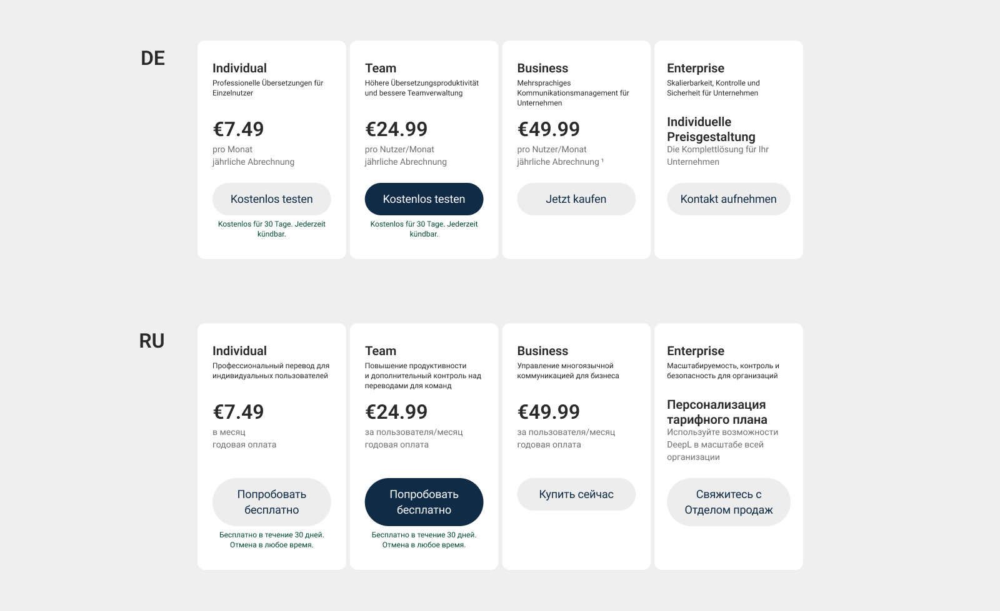
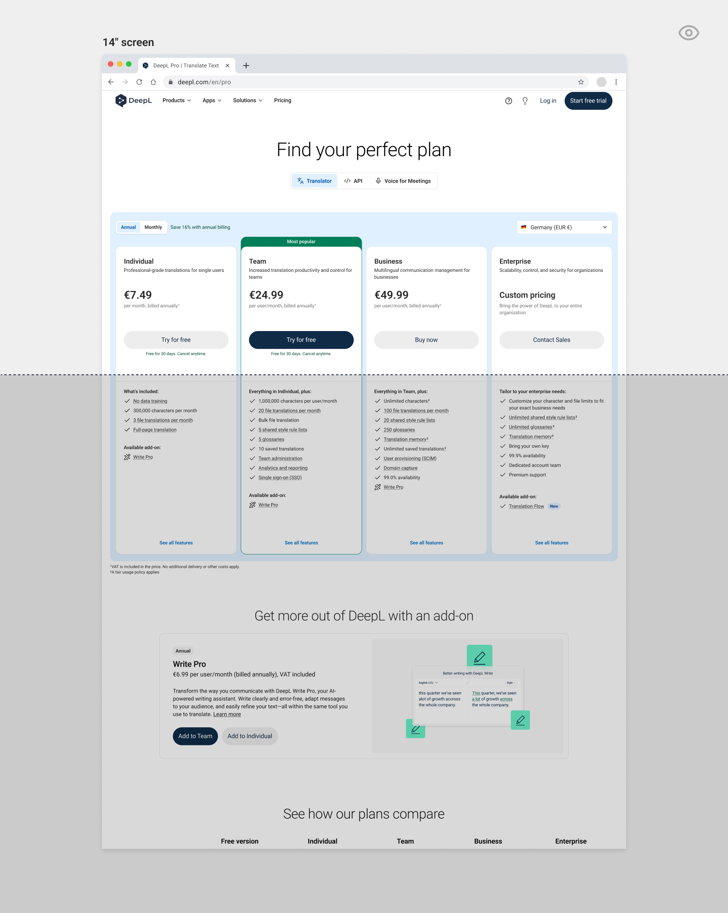
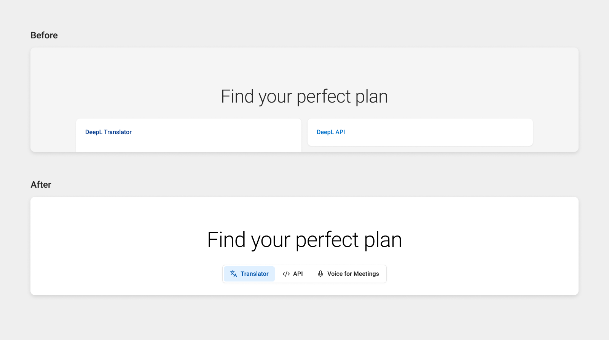
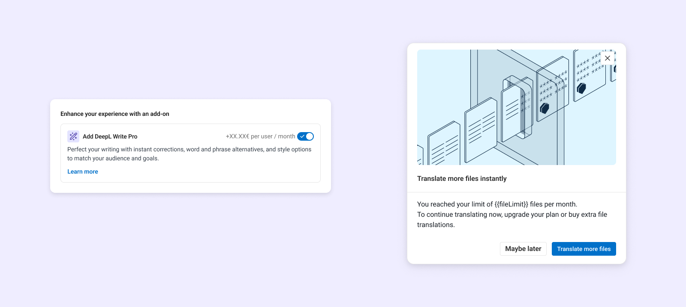
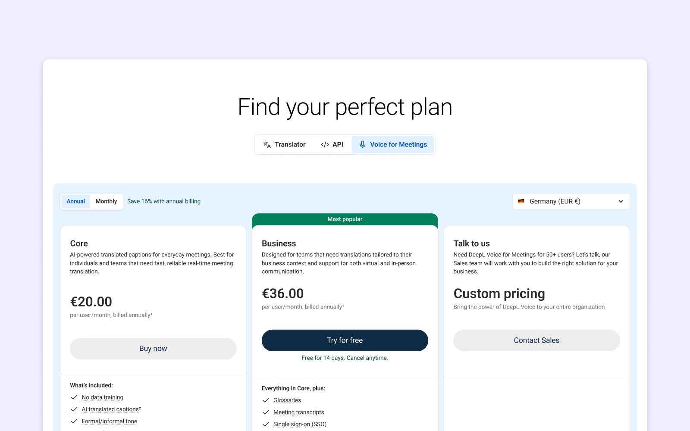

DeepL · 2025–2026
Rethinking pricing page for B2B self-serve
Redesigning a high-traffic pricing experience to support clearer plan decisions, stronger B2B intent, and scalable monetization.

Role
Product Designer
Timeline
Q4 2025 → Q1 2026
(full rollout March 2026)
Team
1 Product Designer (me)
1 Product Manager
1 Engineering Manager
4 Engineers
1 Content Designer
1 Pricing Stategy Manager
1 Product Marketing Manager
Impact Overview
Purchase trend shift
Increased uptake of higher tiers post-launch
Fewer cancellations
Stronger plan-fit among new sign-ups
Design system adoption rate increased
Deprecated system replaced — one page structure per breakpoint instead of two
Problem
The pricing page hadn't been meaningfully redesigned in a long time. Over time, three layers of problems had accumulated.
Business
The page was effectively built to convert free users to paid — but it wasn't clearly targeting B2B audiences. Plans lacked clear value propositions tied to team size and pricing scale, making it difficult for business buyers to self-qualify. The result was missed revenue opportunities, particularly at higher tiers where the business impact is greatest.
UX
Users had to click a CTA or scroll past a large header just to see the actual plans. Competing primary CTAs created confusion about what to do next. And as DeepL's product offering expanded, the navigation structure wasn't scalable enough to accommodate new products cleanly.
Technical
The page was still built on a deprecated design system. Every update required developers to maintain two separate pages per breakpoint, making even small copy or pricing changes slow and costly to ship.
A pricing page should function as a self-serve sales tool. This one wasn't.

How we got here
The initiative came from a mutual recognition between the pricing & packaging team and our product team. The P&P team led the business justification with data, and I led the design side from problem framing through to production.
Before any design work began, I ran a problem alignment workshop with the PM, EM, pricing strategist, and content designer. The goal was a shared understanding of what we were actually solving — business, UX, and technical — before anyone touched a canvas. The participants agreed that the core problem is "Lack of clarity" in terms of the information architecture, visual hierarchy, and messaging.

Approach
Understanding where the page was failing
Discovery
I started by understanding where and why users were struggling, before forming any design direction.
- Support ticket analysis — I analyzed Zendesk tickets through Enterpret to surface recurring patterns in user confusion around plans, pricing, and upgrades.
- Funnel data — I reviewed the drop-off data across the pricing-to-checkout funnel to understand where intent was being lost.
- Competitive benchmarking — I audited SaaS pricing pages across the market to understand conventions, patterns, and where DeepL was meaningfully different.

The hard constraints
Two constraints shaped every design decision and are worth naming explicitly.
Localization at scale. DeepL supports 19 UI languages — and string lengths vary significantly across them. A layout that worked in English could break entirely in German or Russian. This meant the solution had to be built on a reusable, flexible structure — not a fixed layout designed for one language.
Four paid tiers. Most SaaS pricing pages are designed around three tiers including Free. DeepL has four paid plans, which makes the comparison hierarchy harder to communicate clearly and puts more pressure on visual structure to do the work.

Key decisions
Removing Free from the pricing page. There was genuine internal debate: the page was already busy, and Free isn't a paid product — so should it appear on a pricing page at all? Rather than deciding by opinion, we ran an A/B test. The result showed no significant impact on conversion either way. We removed it.
Switch plan as a dialog, not a standalone page. The existing pattern was a standalone page for switching plans. I pushed back on this — a dialog integrates more naturally across any surface, like a growth flow in the product, not just the subscription page. This is a minor change with significant downstream implications for how the feature scales across the product.
Solution
Designing a system that could scale
The revamped pricing page is clearer, more scalable, and built to convert B2B buyers.
1. Immediate plan visibility
The oversized header is gone. Plans are visible the moment the page loads — no scrolling, no clicking required.

2. Scalable product navigation
The navigation structure now supports multiple products cleanly. A new product's self-serve flow was added to the page post-launch — the first time that was possible without a significant dev effort.

3. Clearer billing period toggle
The previous toggle caused confusion about which period was selected. Replacing it with a segmented button group makes the active state immediately obvious.
4. Built on the current design system
The rebuild eliminated the deprecated component debt and reduced the developer maintenance burden — one page structure per breakpoint instead of two.
Extending the self-serve journey beyond pricing
As part of the broader self-serve workstream, I also designed two add-on purchase flows that didn't exist before.
- Write Pro add-on — purchasable directly within the checkout flow and on the pricing page
- Extra file translation add-on — purchasable contextually, either when a user hits their limit or from the subscription management page.

Outcome
A clearer pricing experience with stronger self-serve signals
After full rollout in March 2026, the results validated the strategic trade-off we made.
Sign-up volume declined slightly — an expected outcome as the page became a better qualifier for B2B intent rather than a broad funnel for any user. The signals that mattered more:
1. Plan mix shifted toward higher-value tiers
Team and Business plans saw stronger uptake relative to lower tier like Individual
2. Subscription cancellations decreased
Indicating stronger plan-fit among new sign-ups
3. Design system fully adopted
Migrating away from the deprecated system means the pricing page is now maintained like the rest of the product. One page structure per breakpoint instead of two, making future pricing or copy updates significantly faster to ship
4. Opened opportunities beyond the original scope
because the pricing page was built on reusable, scalable components, another product team was able to add Voice to the pricing page without needing design involvement to rebuild from scratch. The switch plan pattern, redesigned as a dialog, also became reusable across other surfaces in the product — work that extended beyond my original scope

The page is now doing its job as a self-serve sales tool, not just a sign-up form — and the system behind it is built to grow.
What I'd do differently
The logged-in pricing page experience remains unoptimized. Authenticated users currently see the same CTAs as anonymous visitors — which creates unnecessary friction for existing customers looking to upgrade or change their plan. It wasn't in scope for this project, but it's the clearest next step.
Related work
This case study is one part of a broader self-serve journey I owned across ~12 months:
- Q3 2025 — Designed add-on purchase flows (Write Pro, Extra file translation) flow
- Q4 2025 → Q1 2026 — Pricing page revamp (this case study)
- Q1 2026 onward — API repackaging: redesigned the full self-serve journey for a new API pricing model, including checkout, upgrade, downgrade, and cancellation flows